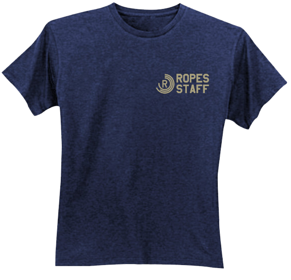
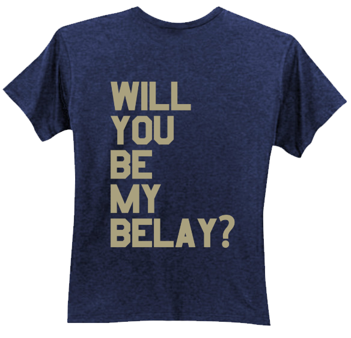

|
My name is Tim Davidson and I'm your area head this season! I was born and raised in Northern Ireland, but also lived in England for eight years and Canada for one. I currently study Interaction Design at Ulster University. Basically it's graphic and web design (in case you hadn't already guessed) with a little bit of magic. When I'm not working in Muskoka Woods I work in NI's only 5 Star hotel, it's pretty sweet, I also do some freelance graphic design. Outside of work I really enjoy listening to music, watching TV shows and movies, hanging out with people, and water sports like sailing and kayaking.This is my third Summer at Muskoka Woods but my fifth season. Last year I had the opportunity to work on site as an instructor for the year. During that time I got my Ropes Level 1 and did a lot of instruction before joining the Summer high ropes staff, so I got to play about on the course a lot. It's a cool job and there are so many different things you can do with ropes, there are always new challenges to try and different routes to explore. No two climbs are ever the same |

| 
Front |

Back |
Over a career of more than 4 decades, Paula Scher has won many different awards. Here are a selection of the awards she has won.
Other awards include:-
“The goal of design is to raise the expectation of what design can be”
Paula Scher has contributed greatly to the advancement of graphic design through her revival of typefaces and historical designs, as well as creating new styles based on Art Deco and Russian Constructivism. She has inspired many artists and her work will continue to do so for many years to come. Her work and passion has undoubtedly raised the expectation and standards for all designers and artists across the world.
Eye Magazine, 04/12/2016, Eye Magazine | Feature | Reputations: Paula Scher [Eye Magazine], [online]. Available: http://www.eyemagazine.com/feature/article/reputations-paula-scher [06/12/2016].
Paula Scher 101, 07/10/2014, Paula Scher [Paula Scher], [online]. Available: http://paulascher101.blogspot.co.uk/ [29/11/2016].
The Great Discontent, 19/11/2013, Paula Scher on The Great Discontent (TGD) [The Great Discontent], [online]. Available: https://thegreatdiscontent.com/interview/paula-scher [29/11/2016].
Prawn Tail, 29/11/2016, Paula Scher: A Biography - Prawn Tail [Prawn Tail - prawntail], [online]. Available: http://prawntail.com/paula-scher-a-biography/ [29/11/2016].
Famous Graphic Designers, 29/11/2016, Paula Scher | Biography, Designs and Facts [Famous Graphic Designers | List, Biographies and Designs], [online]. Available: http://www.famousgraphicdesigners.org/paula-scher [29/11/2016].
Paula Scher, 2005. Make It Bigger. 1st Edition New York City: Springer.